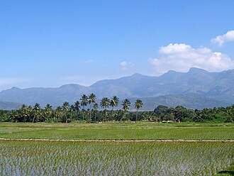

தேனி மாவட்டம்
THENI DISTRICT
VANNKKAM DA MAPLA THENILA ERRUNTHU !!!!
Theni District is one of the 38 districts of Tamil Nadu state in India. Well protected by the scenic hill locks, the district is located besides Madurai district. The town of Theni is the district headquarters. The district is divided into two natural divisions: The hilly areas are constituted by parts of the five taluk's Theni, Bodinayakanur, Periyakulam, Uthamapalayam and Andipatti with thick vegetation and perennial streams from the hills on the western side and Cumbum valley which lies in Uthamapalayam taluk.[6] As of 2011, Theni district had a population of 1,245,899 with a sex ratio of 980 females for every 1,000 males.
The economy of Theni district is mostly agricultural. Utilisation of land area for cultivation in the district is 40.33%.[6]: 29 The principal crop production (in tonnes) in 2005-2006 were sugarcane 1,201,221, cotton 95,360 (561 bales of 170. kg lint each), rice (paddy) 66,093, millets and other cereals 57,081, pulses 6,677, groundnut 4,021 and gingelly 325.[12] Silk, Banana, Coconut, Tea, Coffee, Cardamom, Grapes and Mangoes are other main produce of the district.[13] even though this place is economically good. Kolukkumalai located in Theni district atop the Western ghats is the home to the highest tea plantation in the world. Cumbum Valley is a major centre for grape production with 4,000 small farmers producing over 90,000 tonnes of Muscat grapes, locally known as panneer dhrakshai, and about 10,000 tonnes of Thomson seedless grapes
The Karuppaswamy festival celebration at Anaipatti. Arilmigu Krishnan Kovil Thiruvizha in Purattasi thingal at Lakshmipuram (Jangal Patti Panchayat). B.Ammapatti, Kaliamman kovil is the famous god to solve problems and has a great festival on 1 April. The Ramzan Peru naal Thozhuhai at Periyakulam,[22] Uthamapalayam, Cumbum, Devadhanapatti, Gudalur, Kottur, Bodinayakanur, Chinnamanur, Batalagundu in Theni. Mariyamman Temple Festival also famous. The celebration of Gowmariyamman temple festival at Veerapandi and Cumbum during the month of May. Shri Bathirakaliyamman Chiththirai Thiruvizha Festival at Bathirakalipuram and visuvasapuram near Bodi. Shri Veerappa Ayyanar Festival during Chiththirai Thiruvizha at Theni-Allinagaram. Kamatchi Amman festival at Devadhanapatti and Suyambu Saneeswara Bagavan and the month of Aadi every friday celebration on Temple festival at Kuchanoor. Apart from Pongal celebrations in other areas, the birthday of John Pennycuick who built the MullaiPeriyar Dam is celebrated in Surulipatty[23] and other places. Theni district is known for its celebration of Pongal, which is considered to be one of the most important festivals of Tamil Nadu. Other important festivals of the region are festivals of Masi Maham and Shivarathri which are celebrated in the Kamatchi Amman Temple during the months of February–March and kottur Ekadasi.[26] Christmas and New Year are celebrated in Anaimalayanpatty.[citation needed] Chithirai Thiruvizha in which Lord Aalagar enters in the Vaigai river at Ambasamudram & Govinda Nagaram. Pankuni Thiruvizha in Gandamanur.
The forest area in Theni district is about 33.70%. There are 27 forest areas in the district, constituting a total area of 795.81 km2 (307.26 sq mi). Of these, 19 areas fall under the Reserve Forest category with 255.44 km2 (98.63 sq mi) and 8 areas under Reserve Land category with 540.37 km2 (208.64 sq mi). Total area of forest under green cover classification was 806.86 km2 (311.53 sq mi). Dense forest and sparse forest are 292.81 km2 (113.05 sq mi) and 22.43 km2 (8.66 sq mi), respectively. There is no unclassed forest type in the district. About 44.65 km2 (17.24 sq mi) of artificial forest area are cultivated in the district. Wattle, softwood, fuel wood, cashew, neem, and tamarind are the main forest plantation species in the district.[6] The forest area in the district is 1,179.29 km2 (455.33 sq mi), which is 40.98% of the total geographical area of the district.[16] The Meghamalai Wildlife sanctuary, Srivilliputhur elephant reserve, and part of Kodaikanal Wildlife Sanctuary are situated in Theni district.